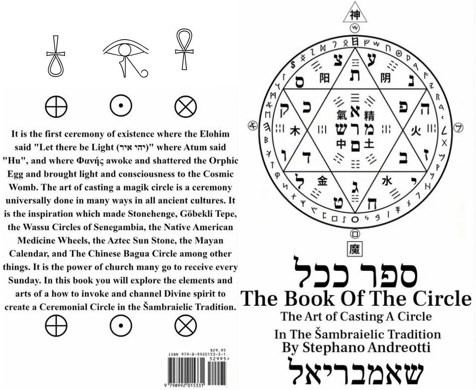

GRAMMATOLOGIST · MYSTIC SHAMAN · EXPERT PRIVATE INSTRUCTOR OF THE ARCANE LIBERAL ARTS
“The Written Word is the Body and Shadow of the Word Itself; pivotal for any manifestation.”— As the Divine told him, recorded in The Book Of The Circle
✦ DESCEND ✦
Šambraiel · Stephano · Στέφανος · He is the same person
שאמבריאל is the name of his soul, which came to him in a three day trance vision meditation. Rendered in Latin transliteration as Šambraiel, it is the root from which every Šambraielic tradition, philosophy, and work stems. The layers of the name are personal and are not explained to the public.
A man of Mediterranean blood, raised in the Italian and Greek-Sicilian traditions, Stephanos comes from a family of magical influence on both sides. From an early age he sought to understand why things are as they are, to find the True Divine in this existence. That search carried him through the world religions and into the ceremonies of many magik societies and traditions, until he was led to form his own systems of practice and study.
For the better part of two decades he has studied culture after culture and found, again and again, identical motifs of Divinity written in different scripts by peoples we are told never met. The Šambraielic Tradition is built on that finding: Divinity is Universal, and where cultures differ shows the pieces that define the culture, not the whole Divine Itself.
“Talent hits a target no one else can hit; genius hits a target no one else can see.”Schopenhauer, as he quotes it to describe the third path of Golden Unity Φ
אות שעון · the flagship seal of the Tradition · the Face of God as a dial
In an intense trance vision, in a world he can only describe as four dimensional, he saw אל, Κρόνος, Oðinn and many other entities, who showed him visions of clocks. They showed him the Face of Ήλιος and told him the Human Face is a Sundial. They told him to unify the Zodiac of the East & West, each sign an hour on the clock. From this came the Γραμμαχρονομετριον: a temporal-linguistic engine where each letter marks a half hour of the day and 7.60921875 days of the year, four seasons of 91.310625 days resolving to a precise solar year of 365.2425 days.
The dial reads your own clock. Touch any letter to consult it.
The Three Mothers of the Hebraic Tradition beside the Three Treasures of the East
He tells people that all you need to do to see the Divine speaking the same protosymbols around the world is to set the Qabalistic anatomical correspondences of the Three Mothers next to the Three Treasures of the three Dantian. The concepts are fundamentally identical. Block script carries the outside world; cursive and calligraphy carry the soul and the inner worlds. Same, yet different.
Fire. The Upper Dantian, the head. Consciousness, aura, light.
Air. The Middle Dantian, the heart. Spirit, breath, the intermediary.
Water. The Lower Dantian, the belly. Essence, matter, physical potential.
The codes run deeper. אל, God, adds to 31; אחד, One, adds to 13. Each is the reflection of the other, and both reduce to 4, the letter ד, the Doorway. The Divine Name יהוה totals 26, the same count as the bones of the human foot. As he writes, Hebrew, Egyptian, Greek, and Sanskrit are loaded with these codes, and learning to read words and numbers in every direction is part of the Work.
Written, charted, drawn, and self published by his own hand

The Art of Casting a Circle in the Šambraielic Tradition
It is the first ceremony of existence: where the Elohim said “Let there be Light,” where Atum said “Hu,” and where Φανής awoke and shattered the Orphic Egg. The art of casting a magik circle inspired Stonehenge, Göbekli Tepe, the Wassu Circles of Senegambia, the Medicine Wheels, the Aztec Sun Stone, and the Chinese Bagua. This book teaches how to invoke and channel Divine spirit to create a Ceremonial Circle of Power & Protection.
The foundation of the Word: how the Alphabet is a mapway to the Heavens, traced from Kemetic hieroglyph through Paleo-Hebrew, Greek, Assyrian script, the Runes and the Latin letters.
Charts, sigils, and seals given in vision and trance channeling, made to show how magik works and how it reads synchronistically across cultures.
The lunar-solar Star or Šabbatic Calendar of the Tradition, with months of 29 to 32 days bending with the Sun as time itself dilates.
The Γραμμαχρονομετριον rendered as a template for human and artificial intelligence alike: a lattice of letters, signs, rulers and checkpoints.
Lesson material for the circle, beginning with Grammatology: Kemet, Phoenician, Greek, Hebrew, Runic and Latin side by side, sound by sound, number by number.
All Alphabets; the 214 Radicals; the Bagua 八卦; the 81 Tetragrams of the 太玄經; Lunar Mansions; the 99 & 72 Names; Virtues from around the World; the Occult Periodic Table.
Authority earned by the Work, not conferred by an institution
Stephanos holds no title from a university in magik, linguistics or the sacred sciences, and he claims none. His standing rests where a Magus’s always has: on decades of study, on the systems he has built, and on the students he has taught. He has learned from teachers and masters across many societies and cultures, consulted linguists in his journeys, and then gone further than the specialists, reading scripts against each other that are rarely read together. He has led circles and classes on occultism for a decade.
“The only authority figure I see myself as is in my own traditions and areas of specialization.”Stephanos Andreotti, The Book Of The Circle
“My Tradition sources from the Religious & Mystic Traditions of…” The Book Of The Circle
Science, Arts, Mathematics & Anthropology are the tools he uses to separate fact from delusion or flawed bias.
“I take no one person as a complete Gospel. I question everything and follow my own philosophy and I encourage you to do the same!”
From a poem channeled in trance, given to invoke the Circle
The Word Flows Down The Tree
United In the Z[i]
The Seven Heaven Spheres
Make Miracles Appear
From Shen to Qi to Jing
Then Center Earth Will Ring
With the Flow of Cardinal Points
The Divine Thou Will Anoint
Beloved Star Time Wheel
Oh How Thou Makes Us Feel
True Spirit Of The Word
Only by Faith is Heard
Oh As I Learn Each Letter
I Know the Divine Better
Oh Divine Please Embrace
All of Us Face to Face
“From the Lady Cæli” · The Book Of The Circle
Private instruction in the Arcane Liberal Arts
His books are written to have some of the blanks filled in by private lessons. There are certain things he does not make available to the public outside of his private students and covenant bearers. If you want the secrets he has to offer, inquire and do what is necessary. If not, he asks that you do not waste his time or yours.
“Power like this must be earned. There is no quasi commitment.”